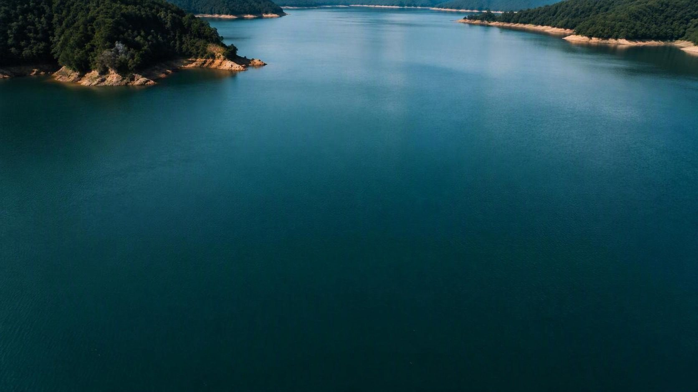
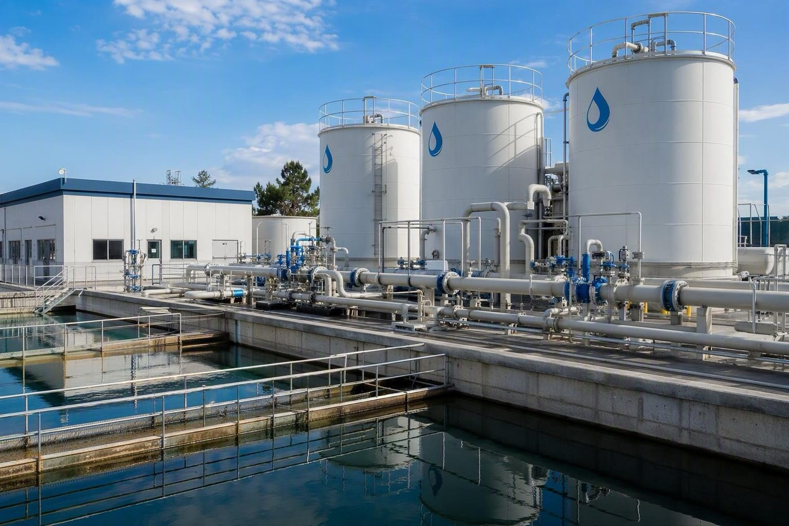
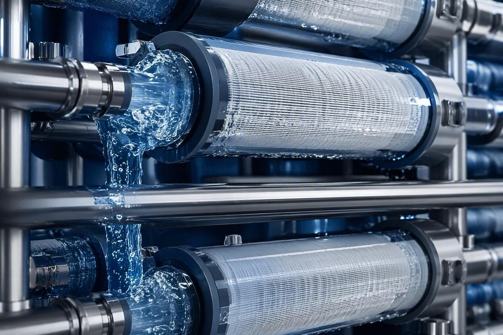
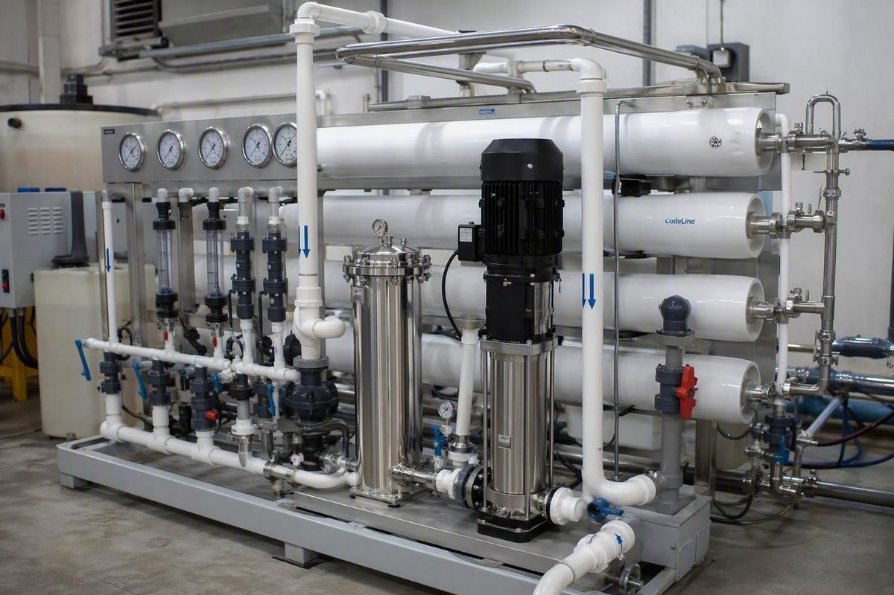
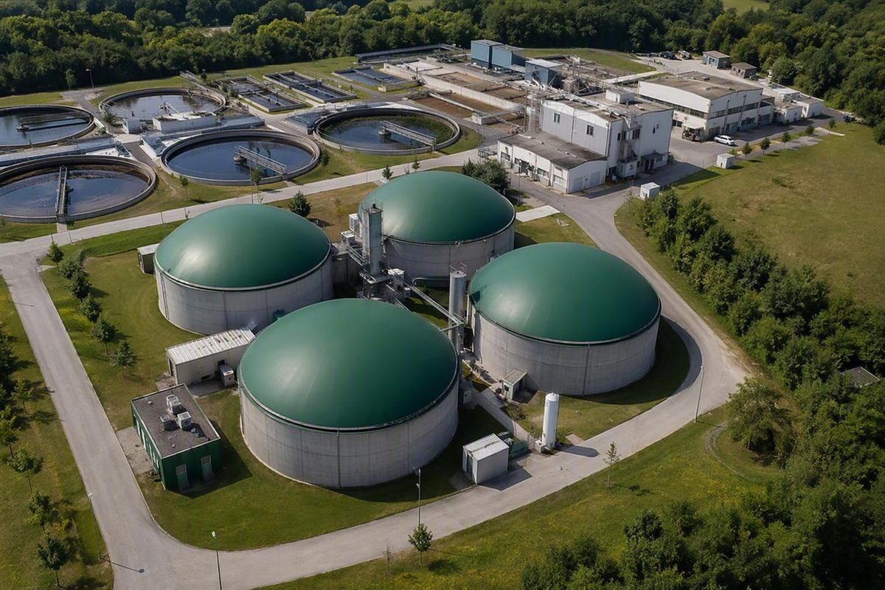
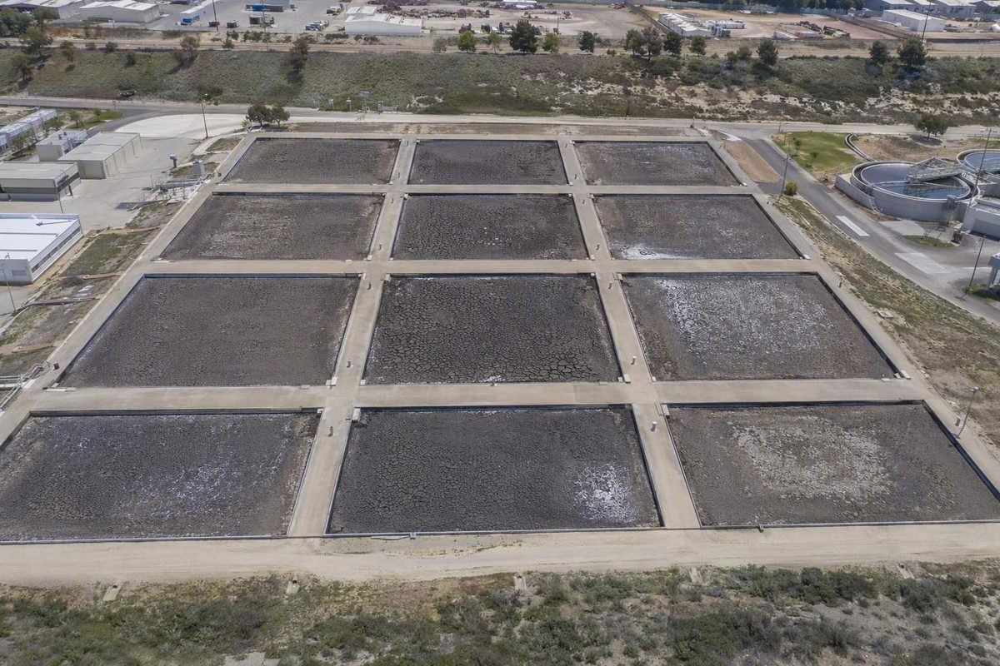
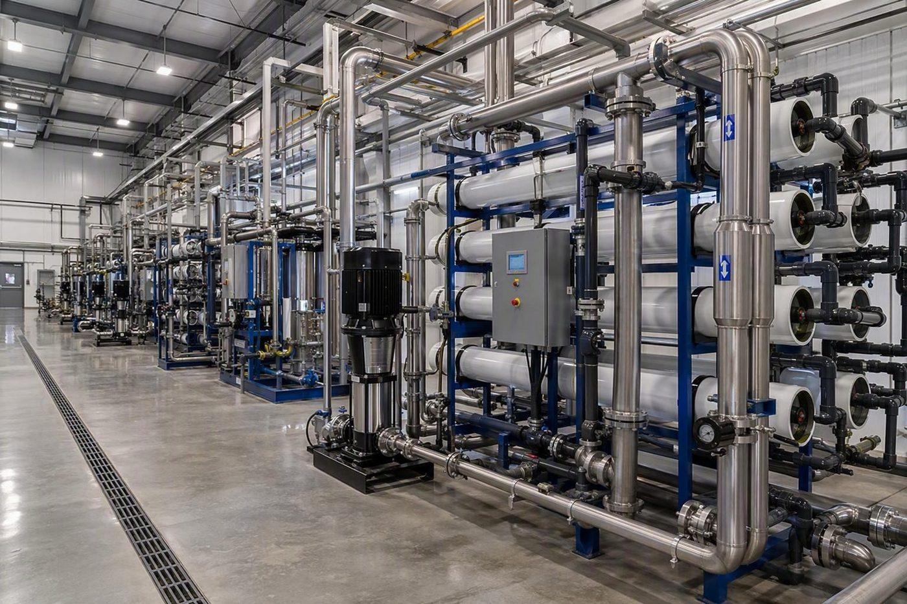

Integrated water treatment, reuse, resource recovery and zero-liquid-discharge technologies engineered for efficient and sustainable industrial operations.
Five integrated technologies designed to treat, recover, reuse and transform resources across demanding industrial applications.

Biological treatment technology for efficient wastewater treatment and organic matter removal.
Explore technology →
Combines biological treatment with membrane filtration to deliver high-quality treated water.
→
Advanced membrane processes for high-quality water purification, reuse and recovery.
→
Recovers renewable energy from organic waste through anaerobic treatment processes.
→
Maximizes water recovery while minimizing or eliminating liquid waste discharge.
→Tiszta Víz integrates proven treatment and resource-recovery technologies to help industries reduce water consumption, recover value and move toward more sustainable operations.

Engineered systems for efficient water management, resource recovery and reuse.
Talk to our team about treatment, reuse, recovery and zero-liquid-discharge solutions.
Get in touch →